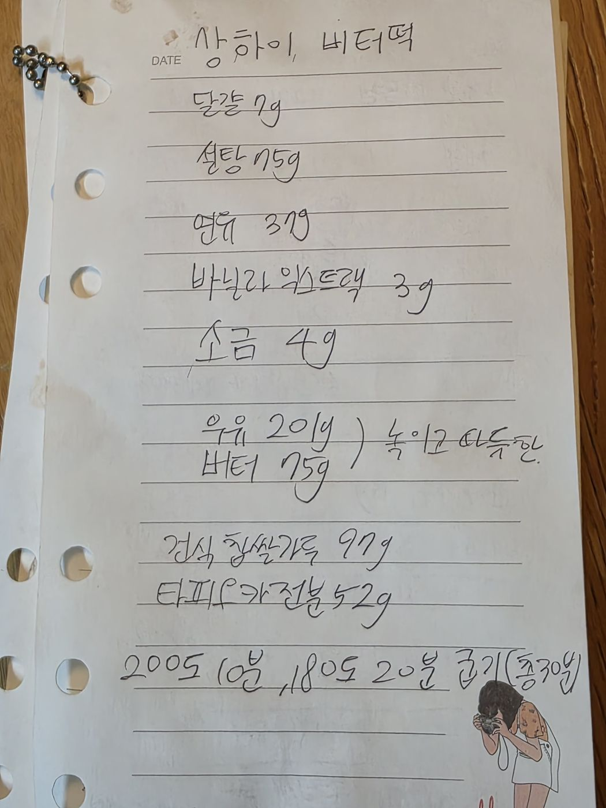

← 전체 레시피
기타
🧈 상하이 버터떡
손으로 적은 노트를 그대로 옮긴 레시피입니다.
분량1판
굽기200℃ 10분 → 180℃ 20분 (총 30분)
📝 달걀 계량은 원본에 '7g'으로 적혀 있어 그대로 옮겼습니다. 나머지 배합이 97g·52g·201g처럼 잘게 나뉜 것으로 보아 원본 확인을 권합니다.
📷 원본 노트 사진 보기
재료
재료
- 달걀 7g
- 설탕 75g
- 연유 37g
- 바닐라익스트랙 3g
- 소금 4g
- 우유 201g
- 버터 75g
- 건식 찹쌀가루 97g
- 타피오카 전분 52g
만드는 법
- 달걀·설탕·연유·바닐라·소금을 섞는다.
- 우유 201g과 버터 75g을 함께 녹여 따뜻하게 만든 뒤 넣는다.
- 건식 찹쌀가루와 타피오카 전분을 섞는다.
- 200℃에서 10분, 180℃에서 20분 굽는다. (총 30분)

원본 노트 사진 — 탭하면 크게 볼 수 있어요